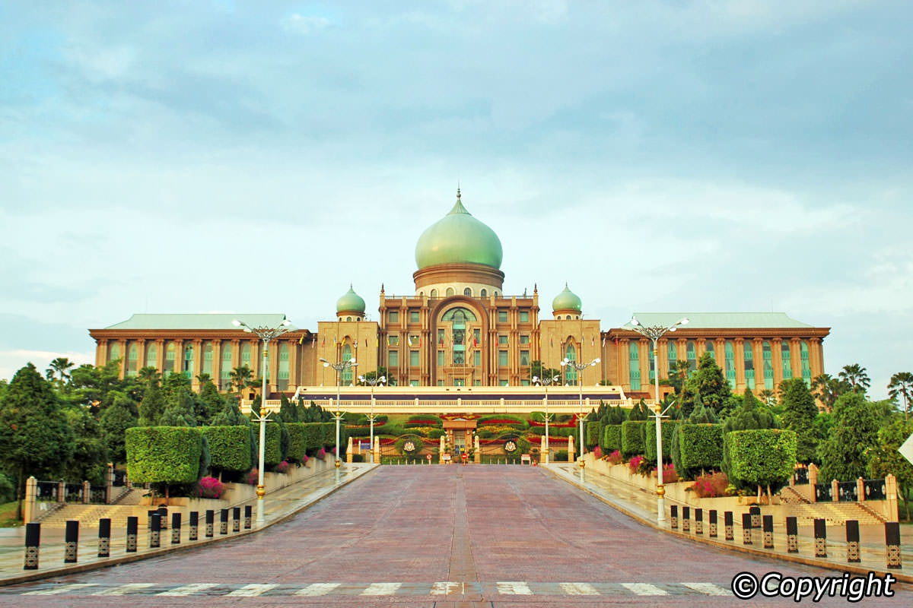
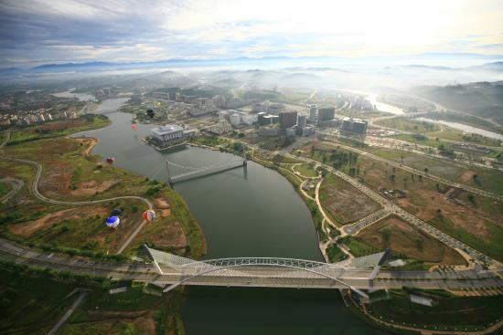
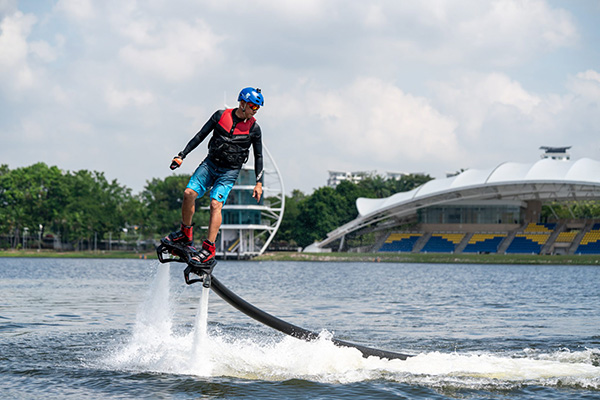
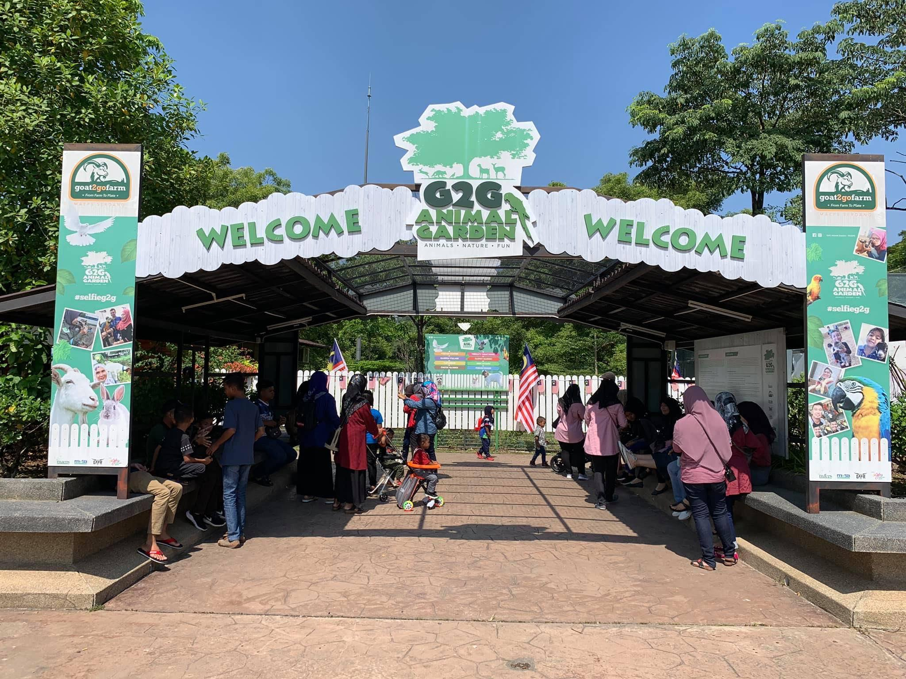
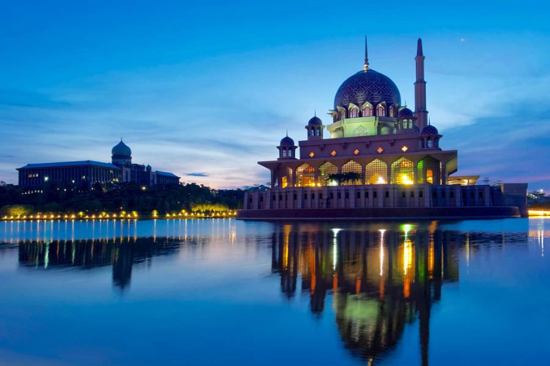

The administrative capital of Malaysia lies 30 kilometres (18.6 miles) south of Kuala Lumpur and showcases the country’s most elegant architecture. People often confuse Putrajaya as an extension of Kuala Lumpur since the two territories seamlessly blend into one another, but there are many differences between each spot. Stately government offices cluster around Central Core District. The pink-domed Putra Mosque dominates the skyline with a soaring minaret that is 116 metres (381 feet) tall. Colossal Seri Perdana (the prime minister’s official residence) blends both Malay and Islamic styles with European neoclassical columns. Putrajaya also hosts a sprawling botanical garden and the futuristic Seri Wawasan cable bridge.

Perdana Putra (Bangunan Perdana Putra)
The Perdana Putra is a building in Putrajaya, Malaysia which houses the office complex of the Prime Minister of Malaysia. Located on the main hill in Putrajaya, it has become synonymous with the executive branch of the Malaysian federal government.

Myballoon Adventure
TMyballoon Adventure, is the first company in the country to receive an Air Operating Certificate (AOC) to operate commercial hot air balloon rides. Four hot air balloon enthusiasts determine to make Malaysia the next ballooning destination in South East Asia and show the world the beauty of this country from above.
Address: B1-28-2 Dataran Niaga Sg Besi, Midfields Square West Off Lebuhraya Sg.Besi, Jalan 11/108c, 57100 Kuala Lumpur, Wilayah Persekutuan Kuala Lumpur

FlyBoard
A Flyboard is a brand of hydroflighting device which supplies propulsion to drive the Flyboard into the air to perform a sport known as hydroflying. A Flyboard rider stands on a board connected by a long hose to a watercraft.

G2G Animal Garden
Feed, touch and play with more than 60 species of exotic animals
Address: Jalan MAEPS 4/1, Fasa 3 Presint 9, 43400 Serdang, Selangor

Masjid Putra
The Putra Mosque is the principal mosque of Putrajaya Wilaya, Malaysia. Construction of the mosque began in 1997 and was completed two years later. It is located next to the Perdana Putra, which houses the Malaysian Prime Minister's office and man-made Putrajaya Lake.
Address: Persiaran Persekutuan, Presint 1, 62502 Putrajaya, Wilayah Persekutuan Putrajaya